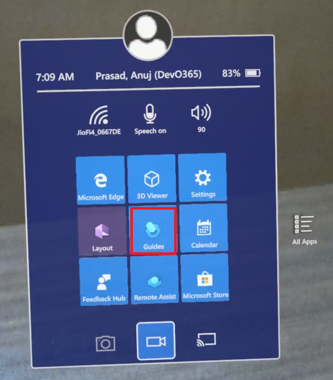
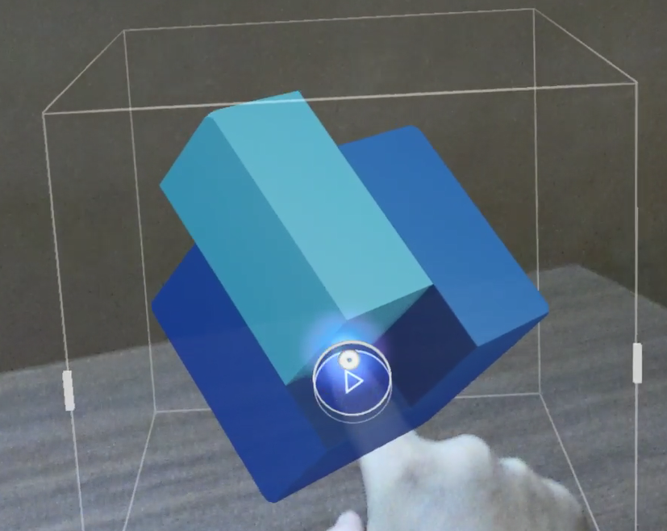
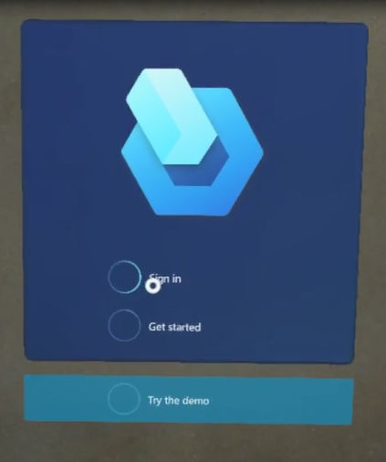
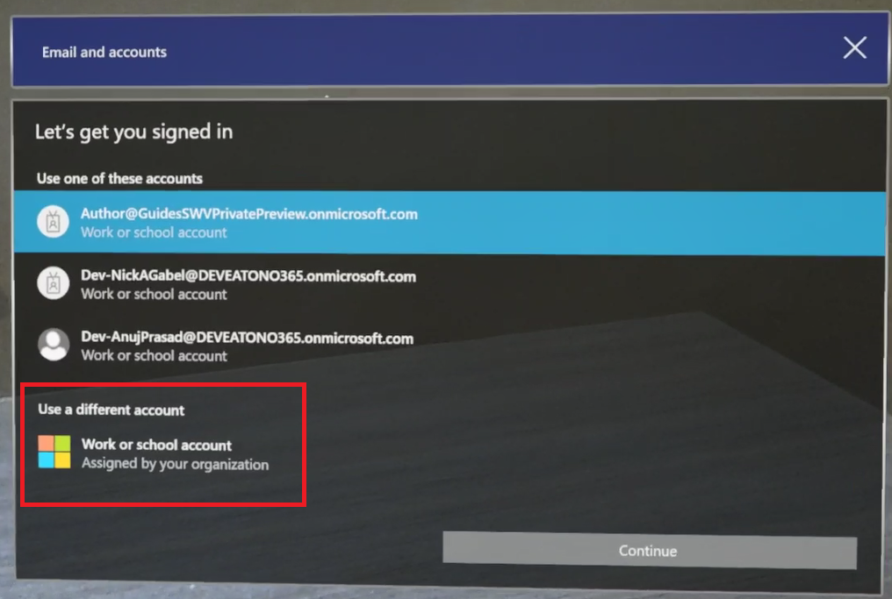
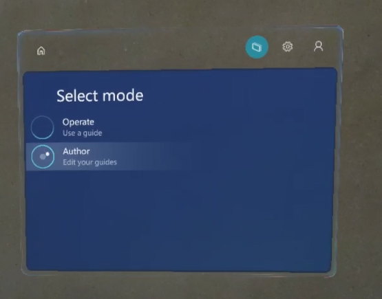
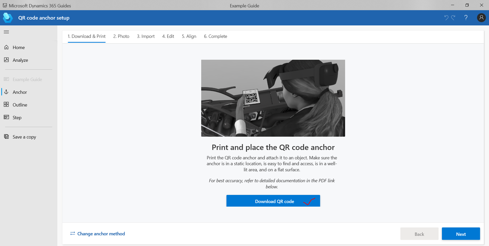
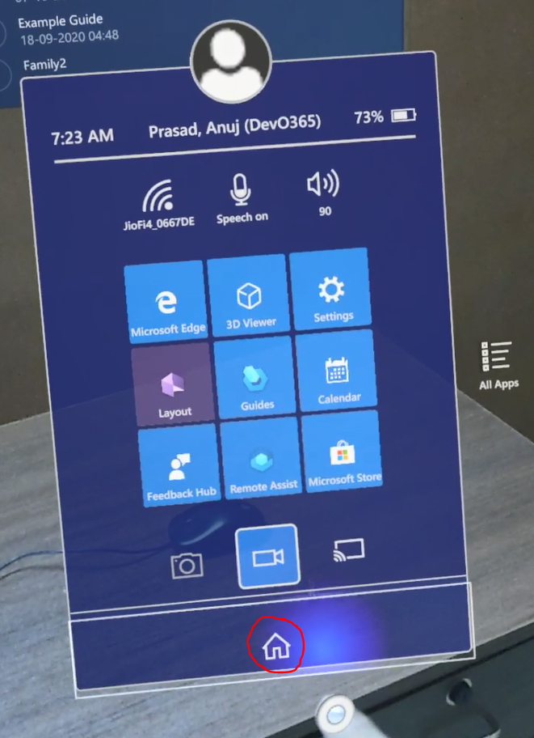
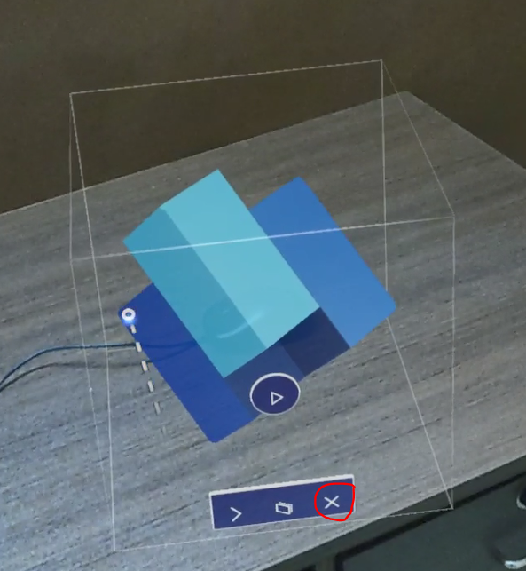

Dynamics 365 Guides authoring on Eaton HL2 device
Voice Commands
How to use D365 Guides in production environment on HoloLens?
Open Guides App on HoloLens (HL) and then air tap on Guide’s icon to launch the application


Use “HoloLens-<Business unit>-<Site name>-<1>@Eaton.onmicrosoft.com” user account to auto login to Guides
- Select Sign in

- Select “Work or school account”

- Enter your site HL user account – “HoloLens-<Business unit>-<Site name>-<1>@Eaton.onmicrosoft.com” and continue, it should not prompt for password and should auto login.
- Select Sign in
Once you are logged-in to Guides on HL, select the instance with name – “Mixed Reality - Prod”.
Open your Guide in Author or operate mode

Once Guide is opened in Author/Operate mode, scan the printed QR code. This QR code can be downloaded and printed using Guides PC App on Anchor step

Note
You might need to scroll down a bit to see the “Download QR code” button on PC App
How to close immersive App like D365 Guides after using it. To exit an app that uses immersive view, use the Start gesture to bring up the Start menu, then select the Mixed reality home button

